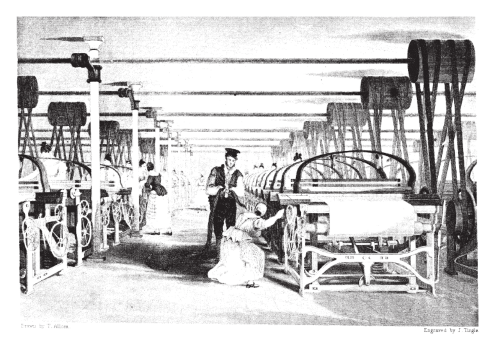
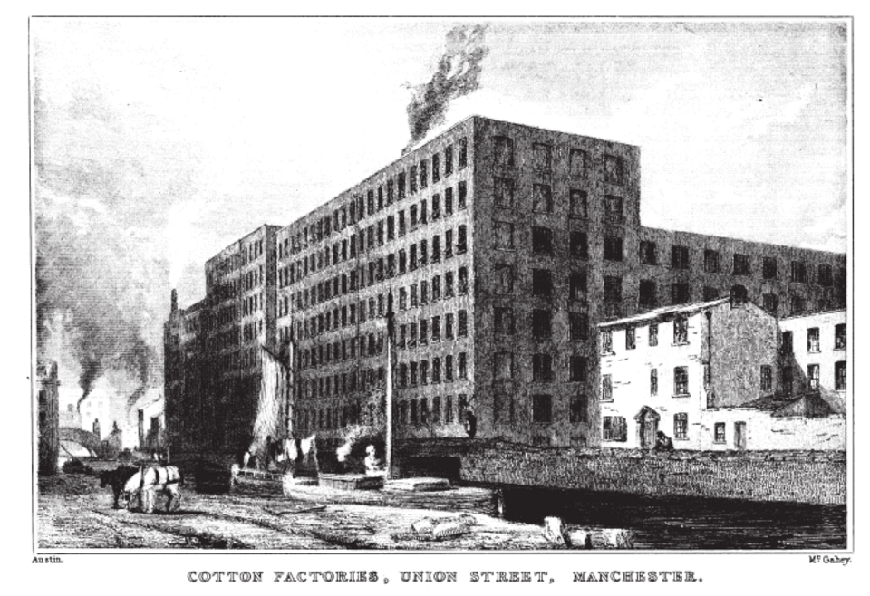
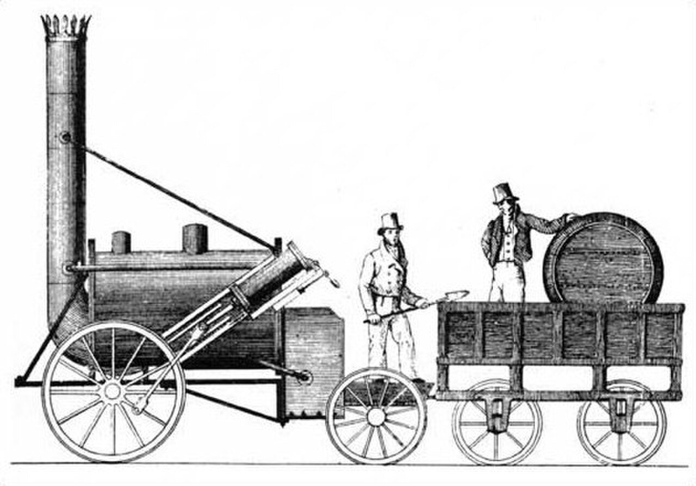
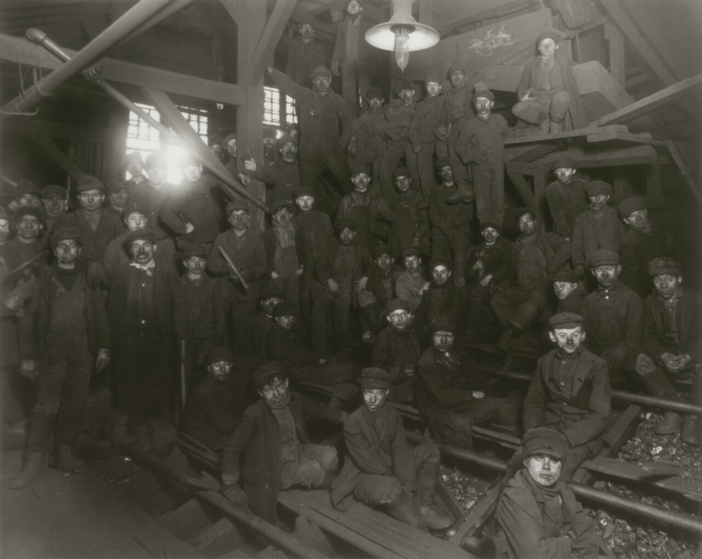

사진 · 1835년 역직기 공장 판화
중학교 역사① · 5단원 제국주의와 국민 국가 건설 운동
공장산업 혁명: 공장과 도시
베인스, 『면직물 공업의 역사』(1835) 역직기 공장 · 퍼블릭 도메인
“산업 혁명은 누구의 삶을
산업 혁명은 누구의 삶을
어떻게 바꾸었을까?
사실기계 · 증기 · 철도
해석공장주와 노동자, 도시와 농촌
확장오늘의 기술 변화
왜 영국이 먼저였을까?
석탄 · 철땅속의 자원
사람농촌을 떠난 노동력
돈무역으로 모은 자본
시장식민지와 바다
면직물
사실인도의 면직물을 따라잡으려
해석실 잣기 · 천 짜기의 기계화
확장목화는 어디서 왔을까

사진 · 이 책을 쓴 사람은
공장을 어떻게 보았을까?
이 책을 쓴 사람은
공장을 어떻게 보았을까?
누가신문 발행인 에드워드 베인스
언제1835년
사실·주장굴뚝 연기는 무엇의 상징
베인스, 『면직물 공업의 역사』(1835) 맨체스터 유니언가 방적 공장 · 퍼블릭 도메인

사진 · 말보다 빠른
기계가 생기면?
말보다 빠른
기계가 생기면?
사실스티븐슨의 로켓호, 1829
해석1830 리버풀-맨체스터 철도
확장시간이 바뀌다
스티븐슨의 로켓호(1829) 그림 · 퍼블릭 도메인

사진 · 이 아이들은
학교 대신 어디에?
이 아이들은
학교 대신 어디에?
누가사진가 루이스 하인
누구에게아동 노동 금지를 바라는 시민
사실·주장사진도 주장을 할까
루이스 하인, 탄광의 소년 노동자(미국 펜실베이니아, 1911) · 퍼블릭 도메인
맨체스터
사실반세기 만에 몇 배로 늘어난 인구
해석빽빽한 집, 오염된 물
확장콜레라와 상하수도
노동자들의 대응
러다이트기계를 부수다
노동조합함께 협상하다
차티스트투표권을 달라
누가 더
잘살게 되었을까?
설명 1값싼 물건, 길게는 생활 수준이 오르다
설명 2처음 수십 년은 노동자의 삶이 나빠지다
확장누구의, 언제를 볼까
오늘의
산업 혁명은?
사실인공 지능 · 자동화
해석사라지는 일, 새로 생기는 일
확장오늘의 러다이트는
“산업 혁명으로 가장 크게 바뀐 사람은 이었다.